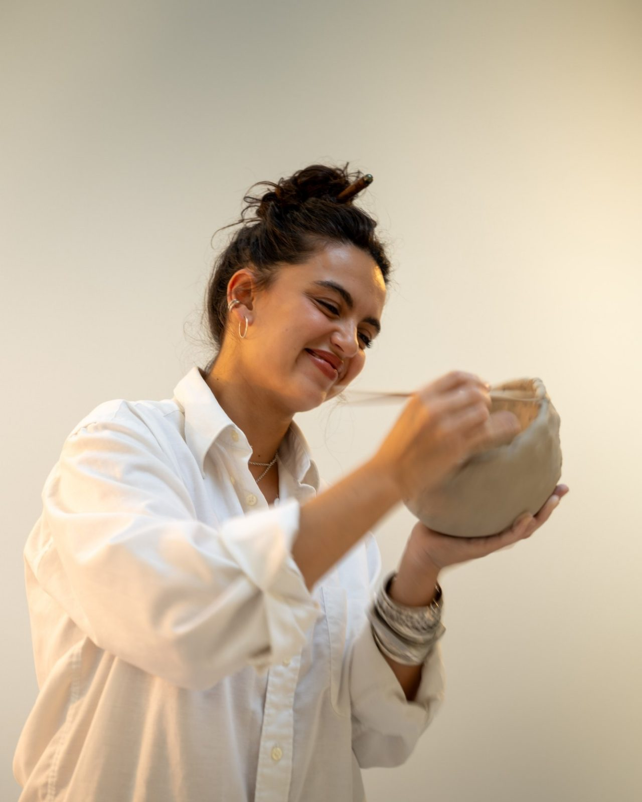
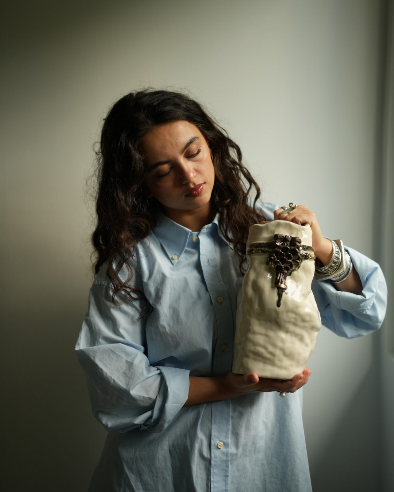
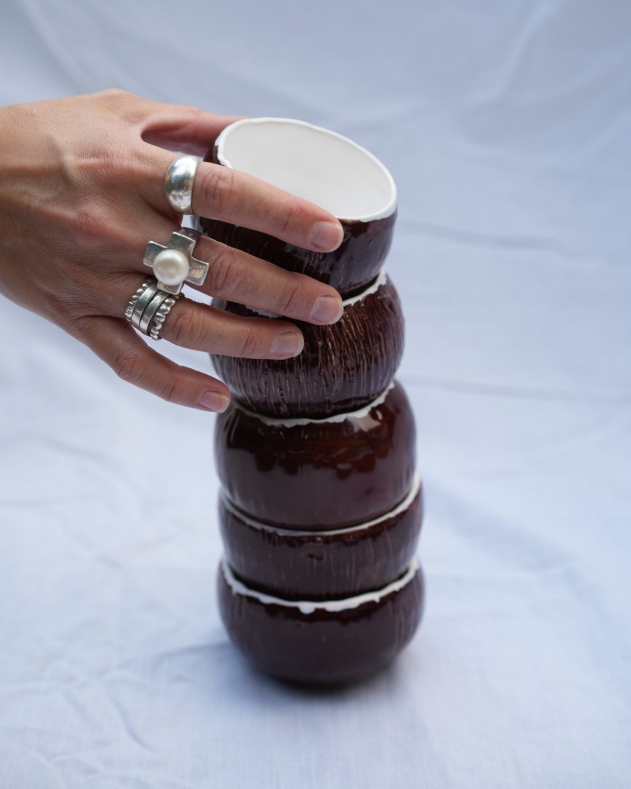

À propos
Quelques mots sur moi
J’ai 26 ans et je suis artiste céramiste depuis peu
J’ai découvert la terre il y a 4 ans et j’en suis tombée amoureuse. Je l’ai laissée de côté quelque temps mais elle m’a rattrapée
J’aime le travail de la matière, la texture de l’argile sous mes doigts, ce médium incroyable qui se modèle à l’infini
J’aime créer, et partager ça avec d’autres

Je crois que nourrir sa créativité est l’une des clés du bonheur et fait partie intégrante de l’expérience humaine. Nous avons ce pouvoir magique d’absorber le monde qui nous entoure et d’exprimer celui qui nous habite pour en sortir des créations qui nous connectent aux autres
Pour ma part je puise mes inspirations dans les humains qui m’entourent, ou que je rencontre brièvement. Les sourires de mes amies pourraient m’inspirer des œuvres jusqu’à la fin de mes jours. Les mains de ma mère sont un monde entier à mes yeux. Les corps en mouvement, les conversations, les étreintes. Toutes ces merveilles me nourrissent et m’émeuvent.

Et puis la nature, ici et ailleurs. Les mouvements de l’océan, les nuances d’un coucher du soleil. L’eau qui danse sur le sable quand les vagues se retirent. Les roches sculptées par le vent, la mer, et le temps. Je pourrais les observer pendant des heures
Je crois qu’on mérite de vivre une vie remplie de magie, et l’art et la créativité nous permettent ça (en plus ça augmente l’espérance de vie)

CASA
Venir à l’atelier
Mon atelier, CASA, se trouve rue Jean Mascré, à Sceaux (92), la rue de la gare RER de Sceaux.
J’y accueille les ateliers uniquement sur rendez-vous. L’adresse exacte vous est envoyée une fois la réservation confirmée.
 Photo à venir
Photo à venir